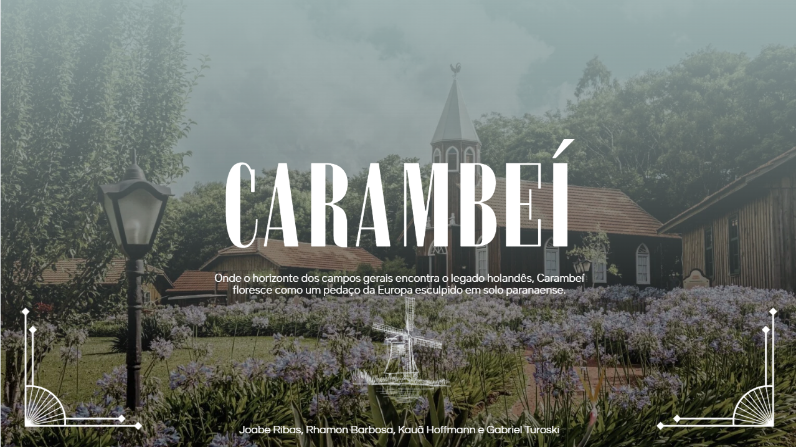
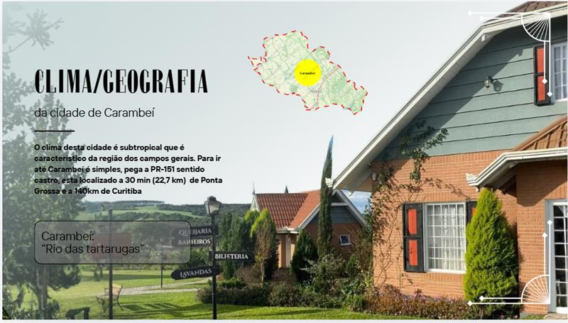
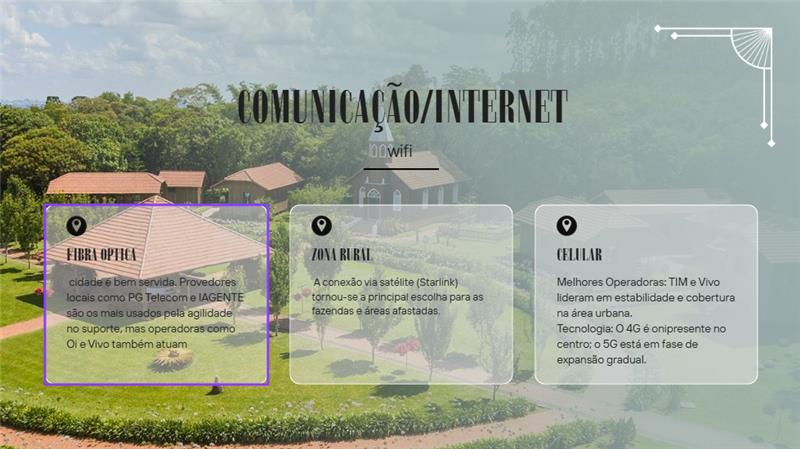
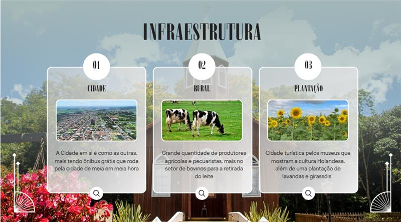

Conheça a cidade histórica e cultural dos Campos Gerais

Carambeí é uma cidade do Paraná conhecida por sua forte influência da imigração holandesa. Fundada no início do século XX, a cidade se destacou pela produção agrícola e pela cultura europeia preservada até hoje.

O clima da cidade é subtropical, característico da região dos Campos Gerais. Carambeí fica próxima de Ponta Grossa e Curitiba, sendo uma cidade conhecida por suas paisagens naturais e campos abertos.

A cidade possui boa infraestrutura de comunicação. A internet por fibra óptica atende a área urbana e conexões via satélite são utilizadas principalmente na zona rural.

Carambeí possui infraestrutura urbana organizada, transporte, produção agrícola forte e grande destaque para o turismo cultural, especialmente relacionado à imigração holandesa.